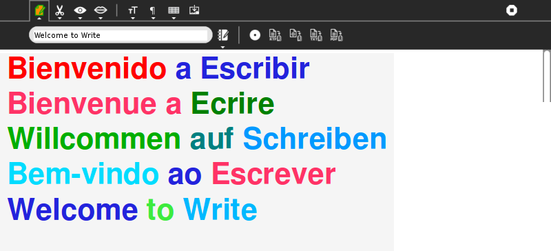
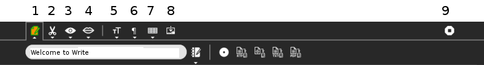
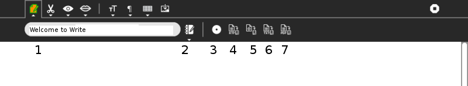

Write¶
About¶
The Write Activity serves as the document creation Activity in Sugar. Its simple interface provides an easy starting point for children, presenting tools that make writing a story, poem, or essay simple and straightforward. It also supports tools for inserting images, creating tables, and performing layout operations.
Write utilizes the Journal, your work is automatically saved, and Collaboration in the form of peer editing, group storytelling, etc.
The Write Activity can be used to open and edit most common file formats, including ODT, DOC, RTF, TXT, and HTML.
Write is included in OLPC images and can be downloaded from ASLO, search for Paint.
Where to get Write¶
Write activity is available for download from the Sugar Activity Library: Write
The source code is available on GitHub.
Using¶
Here Write has been used to produce some colorful text.

The Toolbars¶
Tip Use the Say selected text feature to have robot Alice read aloud this page in the background, while you explore the Write Activity.

We look first at the nine buttons in the top row of the toolbar. The buttons open the corresponding tab or toolbar.
Activity tab, or button, here you can enter a name for the page or project. The Description button allows you to add a description to the Journal entry. Thirdly select Private, or My Neighbourhood.
The Edit button: Allows to Copy, Paste, Undo, Redo, and search inside your document.
The View button: Allows you to zoom in and out of the document and to navigate through the pages quickly.
The Speak button. You can have Speak, robot Alice, read your work aloud.
The Fonts button: Allows you to change the font, size, empphasis, colour and justify.
The Paragraph button : Allows you to set heading and list styles.
The Insert table button : Allows you to insert and adjust a table.
The Insert Image button : Allows you to insert images.
Stop or clpose the Activity.
The Toolbar Sub Menus¶
Activity button (1)¶

Allows you to name your file. Click the cursor in the field, the existing text is selected, and a new file name can be entered.
The “pencil and book” icon, the Description button allows you to add a description to the Journal entry.
This button is the collaboration, or sharing “switch”. The options are
Private, this is the non-sharing option, with no networking.
My Neighbourhood, this is the sharing option, that is, networked with others.
See also below, Collaboration.
Export, or Save in Rrich Text Format.
Export, or Save in HTML.
Export, or Save in Plain text.
Export, or Save in Portable Document Format.
Collaboration¶
The Write Activity supports collaborative (peer) editing, which means that multiple people can edit the same document at the same time.
To start a collaboration, either:
send an invitation, or
share with the Neighborhood
As with all Sugar Activities, invitations go to specific individuals, but sharing is open to anyone in the Neighborhood View.
 For more on this subject, please see the chapter in this manual on
Collaborating.
For more on this subject, please see the chapter in this manual on
Collaborating.
Note to parents and teachers¶
Collaboration is a powerful feature of Write, but it is recommended that when you do collaborate, keep the number of people editing the same document to just 2–3 people. Otherwise, there tend to be delays that cause the document to get out of synch from one computer to another. Also, try to avoid using too many large pictures or tables when collaborating, as these objects tend to get scrambled.
Group Storytelling¶
The Dadaists, a cultural movement that began in Europe towards the end of World War I (1916) invented a number of art-construction techniques, including collage and photo montage. Many of their works were collaborative, including exquisite corpse, a method by which a collection of words or images was collectively assembled. Each collaborator adds to a composition in turn, either by following a rule or by being allowed to see the end of what the previous person contributed.
A shared instance of Write can be used in a similar way to create a collaborative story, poem, rhyme, or group stream of consciousness.
Using Write for group storytelling¶
It is fun and easy to use Write for group storytelling. Simply share a document with a group of friends (or your class); take turns opening the document and adding to the story.
Steps:
Open a document in Write.
Type in a rule on the first line for everyone to follow. (Some examples are listed below.)
Go to the Activity tab.
Select “Share with Neighborhood”.
One at a time, each person in the group should open the shared document by clicking it in the Neighborhood View.
During their turn, they should follow the rule to add to the end of the story.
They should exit Write after they have added to the story. (Important: the person who originally shared the document should not exit Write until everyone has taken their turn.)
After each person has added to the story, the person who started the story should read it aloud to the group.
Examples
Add a sentence that continues the theme of a story.
Add a new sentence that starts with the last word of the sentence that comes before it.
Add a new word that begins with the same letter as the last letter of the word before it.
Add an adjective after a noun, a noun after an adjective.
Add a word with one more letter than the word before it (this gets hard for a large group!)
Add words in alphabetical order.
Letter to the Editor¶
Writing is one of the most powerful means of personal expression ever invented. The expression, “the pen is mightier than the sword” has rung true through out history.
It is important that the world hear your voice and you can make you voice heard, whether through a blog, a letter to the editor, a comment on a page in the Wikipedia, or by some other means. Write gives the power of expression as well as the means to share your expression with others.
If you want to write a letter to the editor, you first need to look in the newspaper or on the paper’s web site to find their e-mail address for letters. Some newspapers have a policy of publishing all appropriate letters sent to the editor, but most are more selective. All require you to include your complete name, address, and a contact telephone number. You can, however, request that your letter be published with “name withheld” if you want. Most editors call you to verify that you really did write the letter before printing it. They also reserve the right to edit your letter to fit the available space on the page.
If you keep your letter short and to the point, you have a better chance of experiencing the thrill of seeing your own words in print. Good luck!
Examples¶
Children in the Galadima School in Abuja, Nigeria used Write to write letters to the president of Nigeria with suggestions about how he could improve the conditions of school for all the children of Nigeria.
Children in Ban Samkha, Thailand used Write to share ideas with their teachers, their families, and their community.
Children in Khairat, India use Write (and Record) to survey their village and compile a report to the community.
Children in Uruguay and Colombia are writing blog entries, also known as blogging. Blog entries are typically chronologically ordered essays or stories.
Other learning activities¶
Start a school newspaper.
Write an autobiography.
Interview someone from your community.
Write an article for the Wikipedia about your community.
Where to report problems¶
Please report bugs and make feature requests at write-activity/issues.
Credits¶
Write is based upon Abiword; the Sugar port was done by J.M. Maurer, Martin Sevior, Tomeu Vizoso and Robert Staudinger